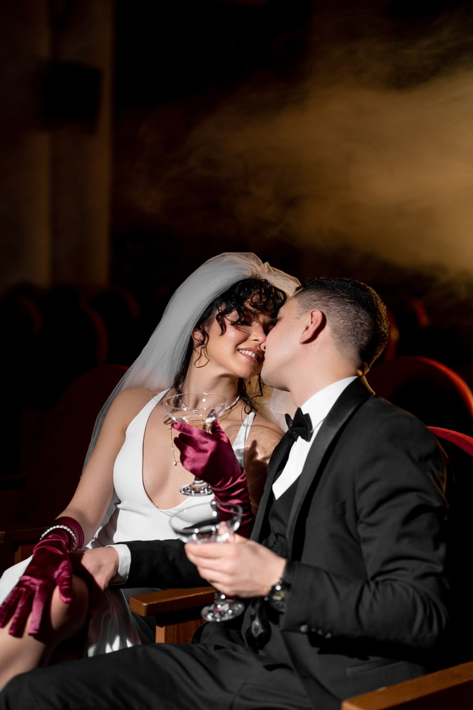
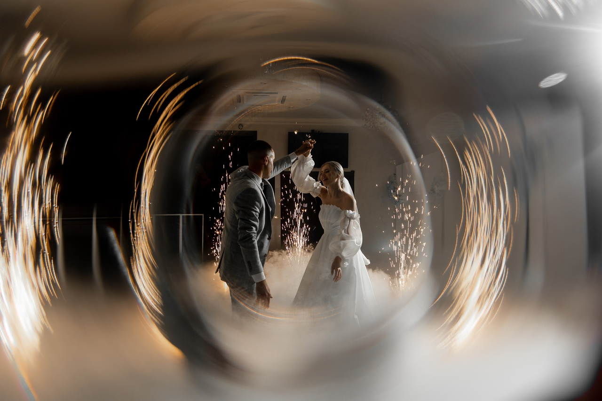

После прохождения курса доходы Виктории Королевой, свадебного фотографа из Саратова, значительно выросли, она стала снимать около 70 свадеб в год с высоким ценником.
Жизнь кардинально изменилась: закрыты долги, приобретены новая камера, автомобиль и участок. Важную роль сыграл куратор, который помог изменить мышление и наладить работу с клиентами.
Мы взяли у нее короткое интервью:
— Вика, расскажи, как дела были до курса, какой средний доход был в месяц? Сколько клиентов?
— А это так давно было что очень тяжело вспомнить. Да и статистику я тогда не вела. В месяц наверно всего тысяч десять))
Ну были постоянные клиенты, но их было очень мало.
— Какие сложности были во время обучения на нашем курсе? Насколько сложно было учиться? За сколько прошла обучение?
— Сроков я уже не помню, правда, давно было)
Наверное, сложность поменять мышление. Было тяжелее всего не настроить рекламу, а именно вот поменять мышление, отношение к этому ко всему, перестроить себя правильно общаться с клиентом. Воспринимать себя как мастера, повышать ценник за услугу и так далее. Да, вот это было сложно.
— Каково было работать с куратором, что было полезно, мотивировало ли это тебя? Как считаешь, без куратора получилось бы так же?
— Я считаю, что без куратора бы так не получилось, потому что у меня был миллион пятьсот и еще один вопрос))) Так бы не получилось у самой.

Но мотивировала я себя сама. Я была изначально настроена на то, что мне это надо, и соответственно, максимально погружалась в это все.
Но что касается знаний знаний, в начале уж точно, куратор – это проводник, который тебя реально ведет за ручку, ведет туда, куда надо. Если ты рогами не упираешься, не сопротивляешься, то у тебя все получается.
Поэтому я сразу приняла решение, что только с куратором. Ну, я себя знаю, мне нужно только так.
— Ты писала, что не запускаешь уже рекламу, а какие сейчас действия делаешь для привлечения клиентов? Как часто пишешь посты?
— Ну, на самом деле все просто по истечению времени у меня накопилась приличная клиентская база. Старая работа, организаторы советуют, сами коллеги. Поэтому реклама быстро перестала быть актуальной. Вообще, я очень мало денег вкладывал в рекламу. За 500 рублей я могла пол сезона себе забить. Это реально было так.
Но там и ценник моих услуг был маленький.
Сейчас я редко что-то пишу. Выкладываю работы, но это так, в ограниченном количестве. А не пишу, потому у меня нет времени на это, серьезно.
Закончился летний сезон, а тут и осенний сезон сразу. А мне нужно время на выдохнуть-продохнуть, потому что у меня еще новый год впереди.
Кстати, на новый год, я не запускаю рекламу, вообще. Мои клиенты и так идут. Я знаю, что весь декабрь я буду плотнячком работать.

Что я делала, в принципе, для того, чтобы без вложений клиентов получить на какой-то проект? Я начинаю разогревать аудиторию, начинаю выходить в сторисы, делиться информацией, подогревать. Сейчас этого уже хватает.
— А можешь поделиться, как изменилась жизнь, когда увеличился доход? Может что-то купила себе? Ездишь в путешествия? Что-то смогла сделать, чего раньше не могла позволить себе) Какие-то крутые мечты осуществила?
— Ну, жизнь изменилась. Мы закрыли все долги. Я купила вторую камеру, купили участок. Путешествовать желания особого нет. Ну если б спросила четыре года назад)
А так много чего поменялось. Ну общем, за это время я погасила ипотеку. Машина куплена уже на наши деньги, без кредитов. Какие-то свои хотелки исполняю без проблем. Купила дорогущую камеру и другой объектив. Не парюсь, покупая себе новые вещи. В зал начала ходить и похудела на двадцать три килограмма. Мечты стали другими, понимаешь?
— Понимаю) Все, остался только вопрос, сколько сейчас зарабатываешь? Сколько в среднем в месяц? Сколько клиентов? А вот примерно сколько за год было прошедший заработано?
— Ну смотри, как бы так ответить обтекаемо)))
Каждый год я зарабатываю чуточку больше, чем предыдущие. Это прям радует, но не буду называть точных цифр.
Скажу так - свадеб, в среднем я снимаю 70 в год. Ценник у меня не слабый)) Больше не скажу)
— Вика, спасибо тебе за ответы! Была рада с тобой пообщаться)